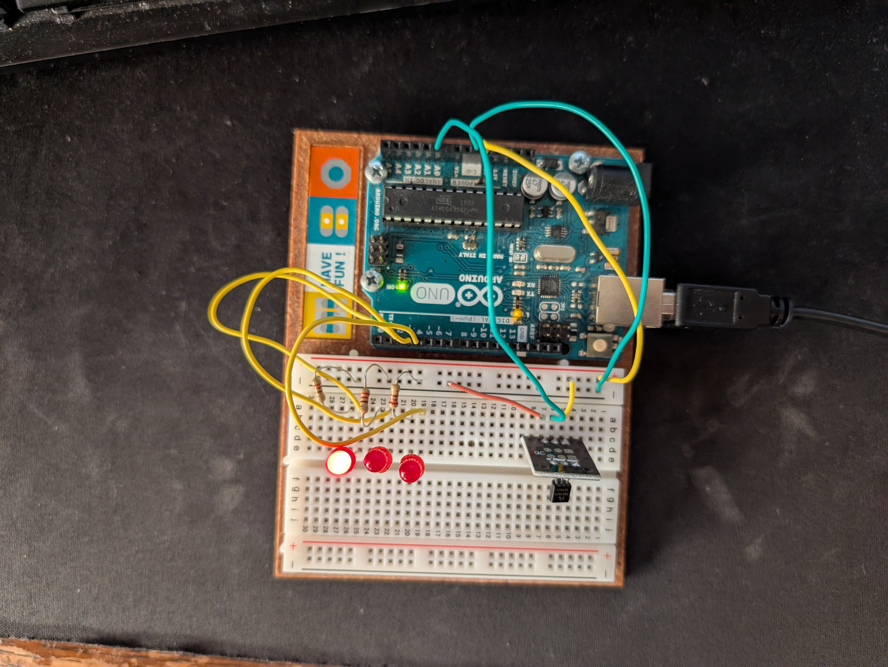

hw3 blog post
Homework 3 saw the introduction of reading analog information from a sensor! Reading information from analog sensors is slightly different compared to digital inputs because you essentially have to parse the incoming voltage to try and reverse engineer the expected effect that you desire. For our homework, just a temperature sensor. The sensor was scripted to control three possible LED’s which would react and light up given the corresponding temperature of the room- (with the target being 20C).
It was very interesting to see the importance of knowing specifications of sensors when building electronics and having them be reliable. A temperature sensor is not the same from every manufacturer and they can have drastically different results when parsing incoming information if you don’t know anything about the sensor that you are using.

The temperature sensor with the light lit.